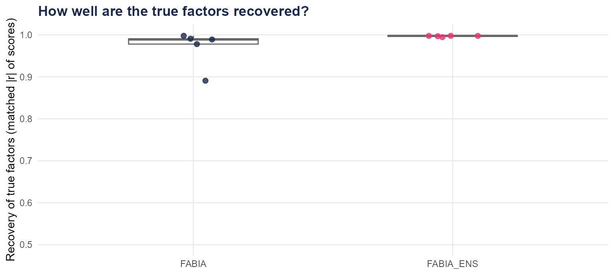

FABIA starts from random values, so two runs on the same data can
give different biclusters. Which ones should you trust? The
ensemble approach (Khamiakova, Kaiser and Shkedy,
Chapter 10 of Applied Biclustering Methods for Big and
High-Dimensional Data Using R, Kasim et al. 2016) answers this by
running the algorithm many times and keeping only the biclusters that
come back again and again. factomics applies it to FABIA as the method
"FABIA_ENS".
How the ensemble works
- Run FABIA
runstimes, each with a different seed and, optionally, on a random subsample of the samples (sample_fraction). - Turn every factor of every run into a bicluster (its features and
samples), with
fabia::extractBic(). - Compute the Jaccard similarity between all biclusters: the share of feature-sample combinations they have in common.
- Group the biclusters by complete-linkage hierarchical clustering, cutting the tree at a similarity of 0.5, so biclusters in a group share at least half of their elements.
- Give each group a reliability: the share of runs in
which it was found. Groups found in at least half of the runs
(
min_reliability) are robust. - Form the robust bicluster from the features and samples present in
at least half of the group’s biclusters (
membership; 1 gives the core intersection, a small value the union “super-bicluster”).
So that ensemble FABIA can be used like any other factomics method, each robust group also becomes a factor, whose loadings and scores are the averages over the group’s members (after aligning their signs).
library(factomics)
sim <- simulate_multiomics(n_samples = 60, seed = 1) # 3 true factors
res <- run_factor_pipeline(sim$data, methods = c("FABIA", "FABIA_ENS"), k = 4,
fabia_ens_control = list(runs = 30),
verbose = FALSE)
res
#> <factomics_results>
#> 60 samples, 3 view(s): transcriptome (200), metabolome (80), microbiome (50)
#> FABIA 4 factors
#> FABIA_ENS 3 factorsWe asked for 4 factors. Plain FABIA returns 4, but the ensemble keeps only the factors it found reliably, which here are the 3 that are really in the data.
Which biclusters are robust?
plot_fabia_ensemble(res)
res$FABIA_ENS$meta$groups
#> group size n_runs reliability kept
#> 1 1 30 30 1.00000000 TRUE
#> 2 2 30 30 1.00000000 TRUE
#> 3 3 30 30 1.00000000 TRUE
#> 4 4 6 6 0.20000000 FALSE
#> 5 5 1 1 0.03333333 FALSEThree groups were found in every run. The others turned up only in some runs: they depend on the starting values and a single FABIA run might report one of them as a real bicluster.
The robust biclusters themselves, with their features and samples:
b <- res$FABIA_ENS$meta$biclusters
sapply(b, function(x) c(features = length(x$features),
samples = length(x$samples),
reliability = x$reliability))
#> F1 F2 F3
#> features 56 32 49
#> samples 21 18 23
#> reliability 1 1 1
head(b$F1$features)
#> [1] "transcriptome::gene_001" "transcriptome::gene_002"
#> [3] "transcriptome::gene_015" "transcriptome::gene_035"
#> [5] "transcriptome::gene_043" "transcriptome::gene_049"How many of the robust features are true signal features in the simulation?
truth <- sim$truth$feature_labels
robust <- unique(unlist(lapply(b, `[[`, "features")))
table(robust = names(truth) %in% robust, true_signal = truth)
#> true_signal
#> robust 0 1
#> FALSE 167 27
#> TRUE 0 136Every feature in a robust bicluster is a true signal feature: the ensemble adds no noise features.
The tree of all biclusters from all runs, as in the book (each robust group joins at a low height):
plot(res$FABIA_ENS$meta$tree, labels = FALSE, hang = -1,
main = "Biclusters from 30 FABIA runs", xlab = "",
sub = "Complete linkage on 1 - Jaccard")
abline(h = 0.5, lty = 2, col = "#E8366F")
Comparing FABIA and ensemble FABIA across seeds
factor_stability() fits the methods once per seed and
checks how much the factors change: for every pair of seeds the factors
are matched and their loadings correlated. Since the truth is known
here, it also reports how well the true factors are recovered.
st <- factor_stability(sim$data, methods = c("FABIA", "FABIA_ENS"), k = 4,
seeds = 1:5, truth = sim$truth$Z,
fabia_ens_control = list(runs = 30))
st
#> <factomics_stability> 5 seeds
#> method mean_stability min_stability mean_recovery sd_recovery
#> FABIA 0.798 0.712 0.969 0.04444
#> FABIA_ENS 0.999 0.998 0.997 0.00132
plot_factor_stability(st, "recovery")
A single FABIA run gives clearly different factors depending on the seed. The ensemble gives practically the same factors whatever the seed, and recovers the true factors at least as well.
Tuning
All settings are in fabia_ensemble_control(), passed as
fabia_ens_control = list(...) in
run_factor_pipeline(), or used directly with the shortcut
fabia_ensemble():
fit <- fabia_ensemble(sim$data, k = 5, alpha = 0.01, cyc = 1000,
control = fabia_ensemble_control(
runs = 100, # the book used 100 seeds
sample_fraction = 0.8, # also robust to the samples
similarity = 0.5, # cut the tree at Jaccard 0.5
min_reliability = 0.5, # found in >= half the runs
membership = 0.5)) # majority robust bicluster- More
runsgive more precise reliabilities; it costs one FABIA fit per run. -
sample_fraction < 1also makes the biclusters robust to which samples were used, a form of subsampling as described in the book. - If no group reaches
min_reliability, factomics stops with a message giving the best reliability it found; lowermin_reliabilityorsimilarity. -
alpha(sparseness) andkare FABIA’s own settings and are the same for every run.